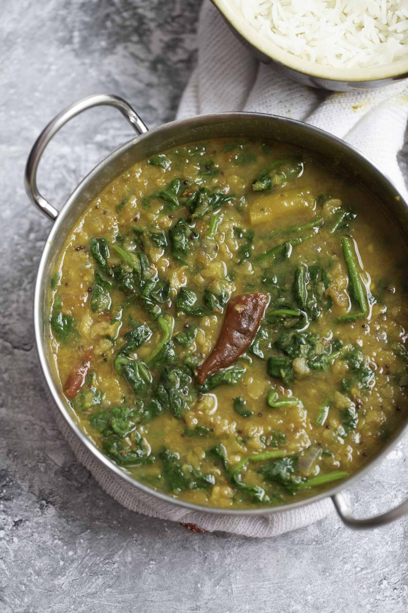

Dal Palak is a popular and nutritious Indian dish made with seasoned lentils (dal) and fresh spinach (palak). It is highly customizable, naturally vegan (if made with oil), and serves as an excellent source of protein and greens